Two old sceners, one bored eighteen-year-old, and a 1990s computer whose Turbo button finally does something. The story of the art that runs in real time — and the museum built so you can walk through it.
The colours behind this title are not a video. They are a small program running right now — which is the whole point of everything below.
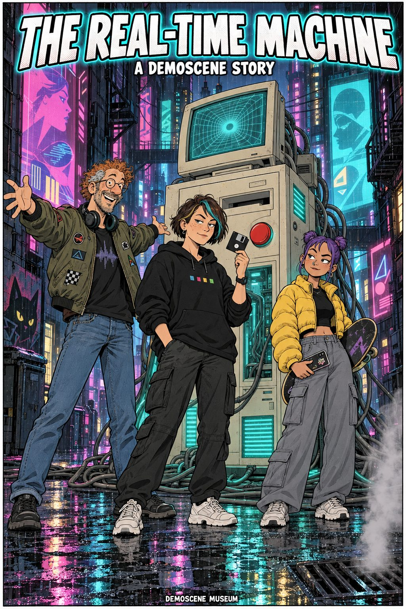
PAGE 1The Real-Time Machine — a demoscene story.
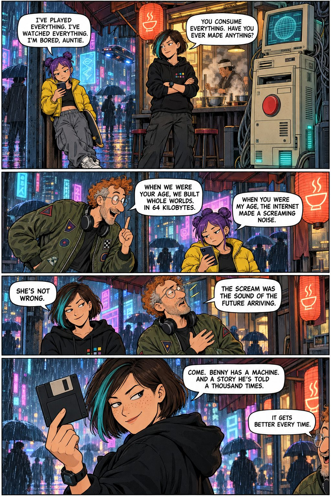
PAGE 2Noa: I've played everything. I've watched everything. I'm bored, Auntie. Léa: You consume everything. Have you ever made anything? Benny: When we were your age, we built whole worlds. In 64 kilobytes. Noa: When you were my age, the internet made a screaming noise. Léa: She's not wrong. Benny: The scream was the sound of the future arriving. Léa: Come. Benny has a machine. And a story he's told a thousand times. Benny: It gets better every time.
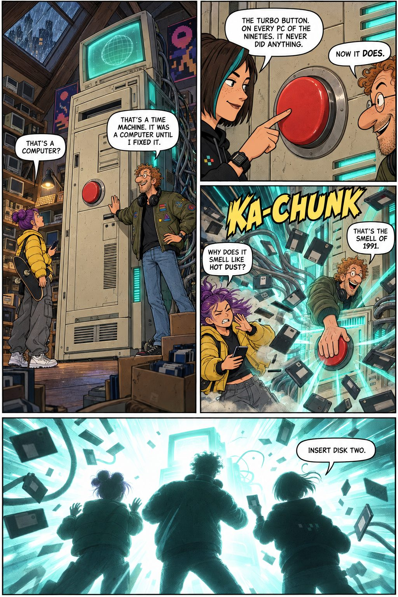
PAGE 3Noa: That's a computer? Benny: That's a time machine. It was a computer until I fixed it. Léa: The Turbo button. On every PC of the nineties. It never did anything. Benny: Now it does. KA-CHUNK.Noa: Why does it smell like hot dust? Benny: That's the smell of 1991. Léa: Insert disk two.
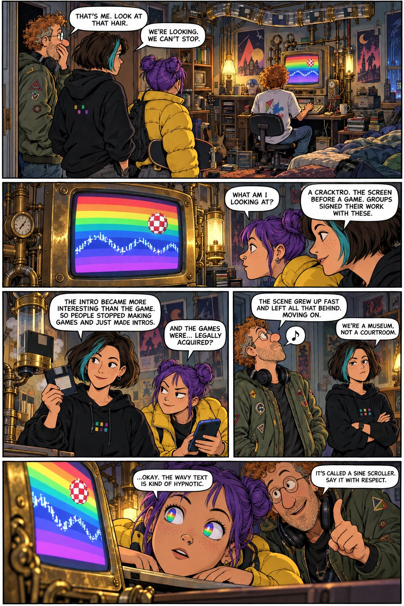
PAGE 4Benny: That's me. Look at that hair. Léa: We're looking. We can't stop. Noa: What am I looking at? Léa: A cracktro. The screen before a game. Groups signed their work with these. The intro became more interesting than the game — so people stopped making games and just made intros. Noa: And the games were... legally acquired? Benny: The scene grew up fast and left all that behind. Moving on. Léa: We're a museum, not a courtroom. Noa: ...Okay. The wavy text is kind of hypnotic. Benny: It's called a sine scroller. Say it with respect.
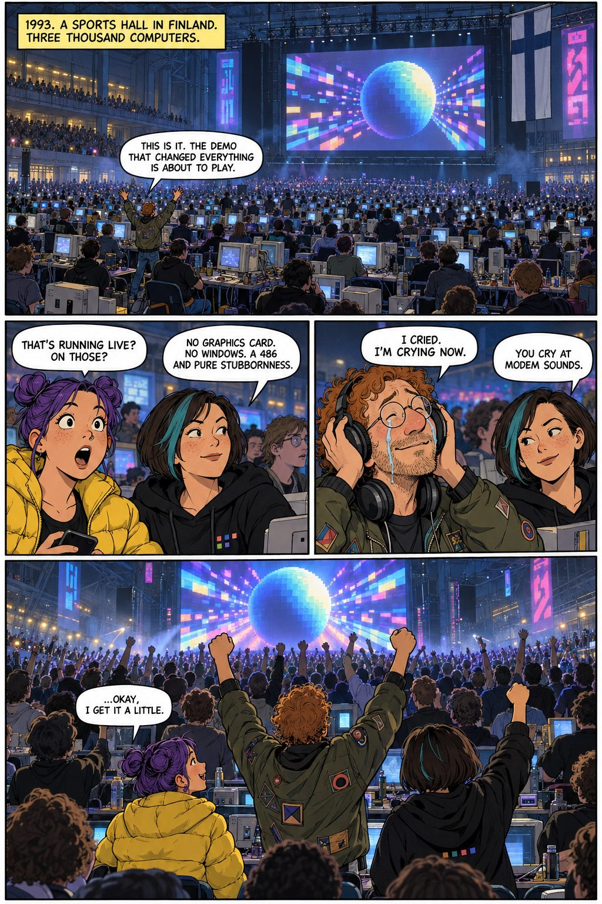
PAGE 51993. A sports hall in Finland. Three thousand computers.Benny: This is it. The demo that changed everything is about to play. Noa: That's running live? On those? Léa: No graphics card. No Windows. A 486 and pure stubbornness. Benny: I cried. I'm crying now. Léa: You cry at modem sounds. Noa: ...Okay, I get it a little.
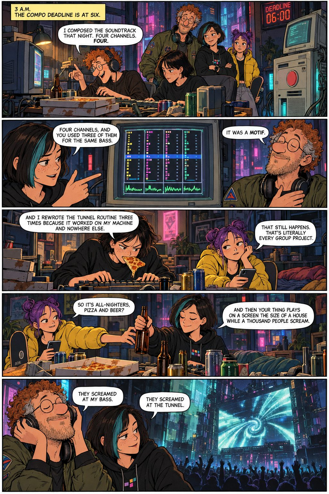
PAGE 63 a.m. The compo deadline is at six.Benny: I composed the soundtrack that night. Four channels. Four.Léa: Four channels, and you used three of them for the same bass. Benny: It was a motif. Léa: And I rewrote the tunnel routine three times because it worked on my machine and nowhere else. Noa: That still happens. That's literally every group project. So it's all-nighters, pizza and beer? Léa: And then your thing plays on a screen the size of a house while a thousand people scream. Benny: They screamed at my bass. Léa: They screamed at the tunnel.
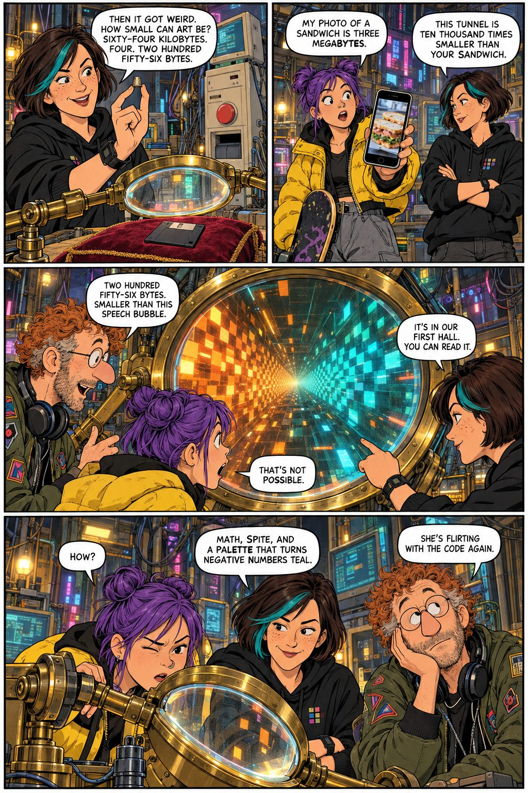
PAGE 7Léa: Then it got weird. How small can art be? Sixty-four kilobytes. Four. Two hundred fifty-six bytes. Noa: My photo of a sandwich is three megabytes. Léa: This tunnel is ten thousand times smaller than your sandwich. Benny: Two hundred fifty-six bytes. Smaller than this speech bubble. Noa: That's not possible. Léa: It's in our first hall. You can read it. Noa: How? Léa: Math, spite, and a palette that turns negative numbers teal. Benny: She's flirting with the code again.
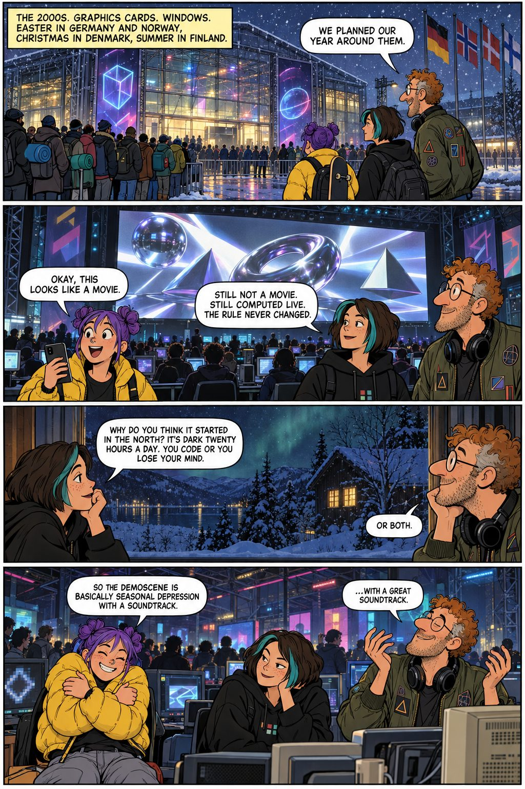
PAGE 8The 2000s. Graphics cards. Windows. Easter in Germany and Norway, Christmas in Denmark, summer in Finland.Benny: We planned our year around them. Noa: Okay, this looks like a movie. Léa: Still not a movie. Still computed live. The rule never changed. Why do you think it started in the north? It's dark twenty hours a day. You code or you lose your mind. Benny: Or both. Noa: So the demoscene is basically seasonal depression with a soundtrack. Benny: ...With a great soundtrack.
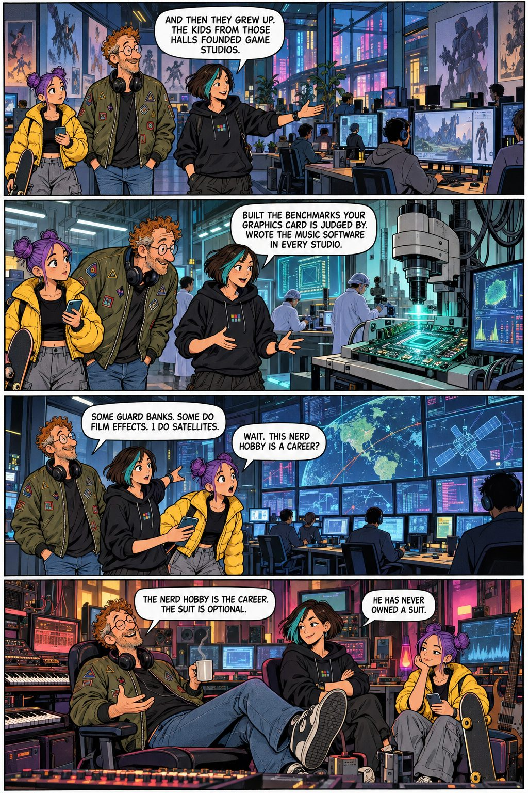
PAGE 9Léa: And then they grew up. The kids from those halls founded game studios. Built the benchmarks your graphics card is judged by. Wrote the music software in every studio. Some guard banks. Some do film effects. I do satellites. Noa: Wait. This nerd hobby is a career? Benny: The nerd hobby is the career. The suit is optional. Léa: He has never owned a suit.
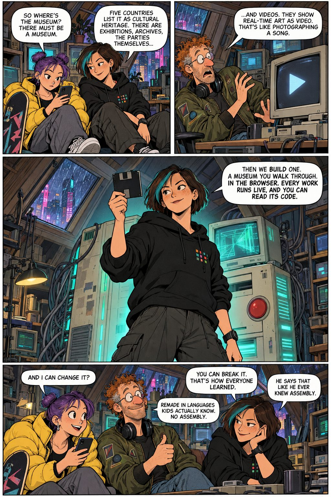
PAGE 10Noa: So where's the museum? There must be a museum. Léa: Five countries list it as cultural heritage. There are exhibitions, archives, the parties themselves... Benny: ...and videos. They show real-time art as video. That's like photographing a song. Léa: Then we build one. A museum you walk through. In the browser. Every work runs live, and you can read its code. Noa: And I can change it? Léa: You can break it. That's how everyone learned. Benny: Remade in languages kids actually know. No assembly. Léa: He says that like he ever knew assembly.
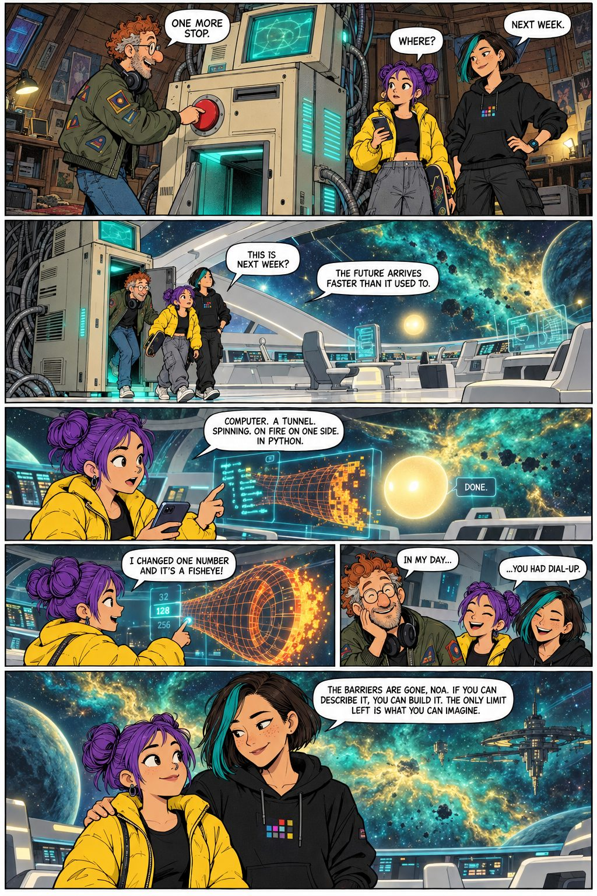
PAGE 11Benny: One more stop. Noa: Where? Léa: Next week. Noa:This is next week? Léa: The future arrives faster than it used to. Noa: Computer — a tunnel. Spinning. On fire on one side. In Python. ... I changed one number and it's a fisheye! Benny: In my day... Noa and Léa: ...you had dial-up. Léa: The barriers are gone, Noa. If you can describe it, you can build it. The only limit left is what you can imagine.
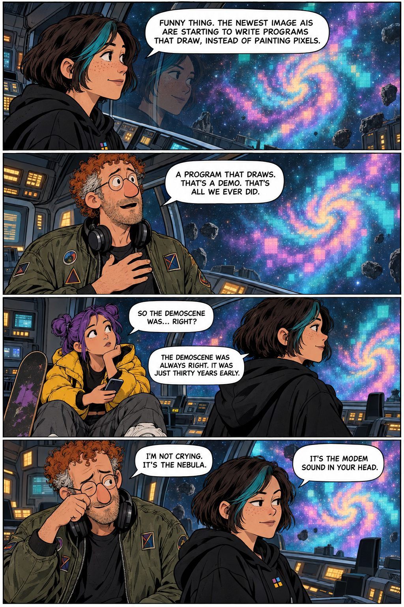
PAGE 12Léa: Funny thing. The newest image AIs are starting to write programs that draw, instead of painting pixels. Benny: A program that draws. That's a demo. That's all we ever did. Noa: So the demoscene was... right? Léa: The demoscene was always right. It was just thirty years early. Benny: I'm not crying. It's the nebula. Léa: It's the modem sound in your head.
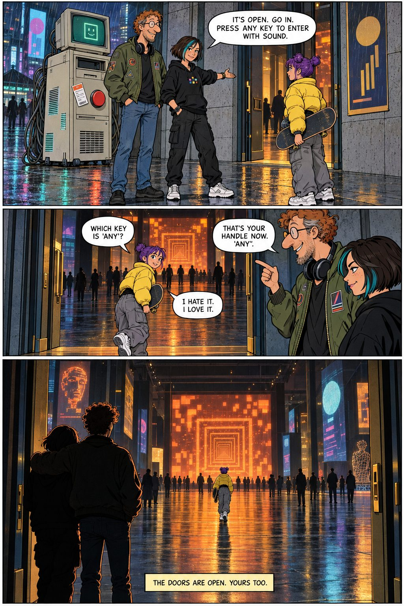
PAGE 13Léa: It's open. Go in. Press any key to enter with sound. Noa: Which key is "any"? Benny: That's your handle now. "Any". Noa: I hate it. I love it. The doors are open. Yours too.
Your turn, "Any".
Not a game you play. A world you make — at home, with your imagination, in languages you can read, with every entry barrier gone. Walk in. Press a key to hear the music. Find the tunnel. Change a number.